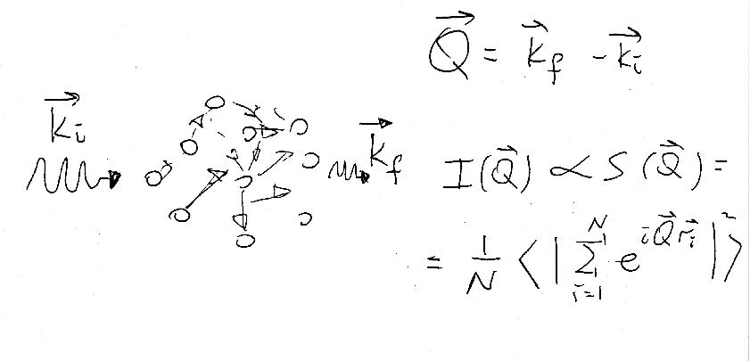
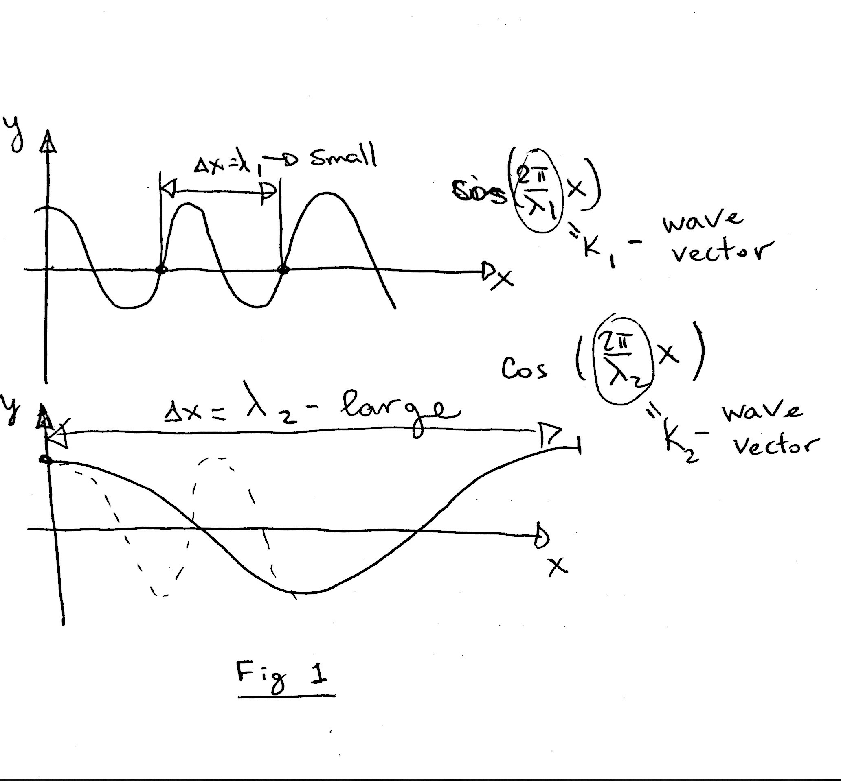
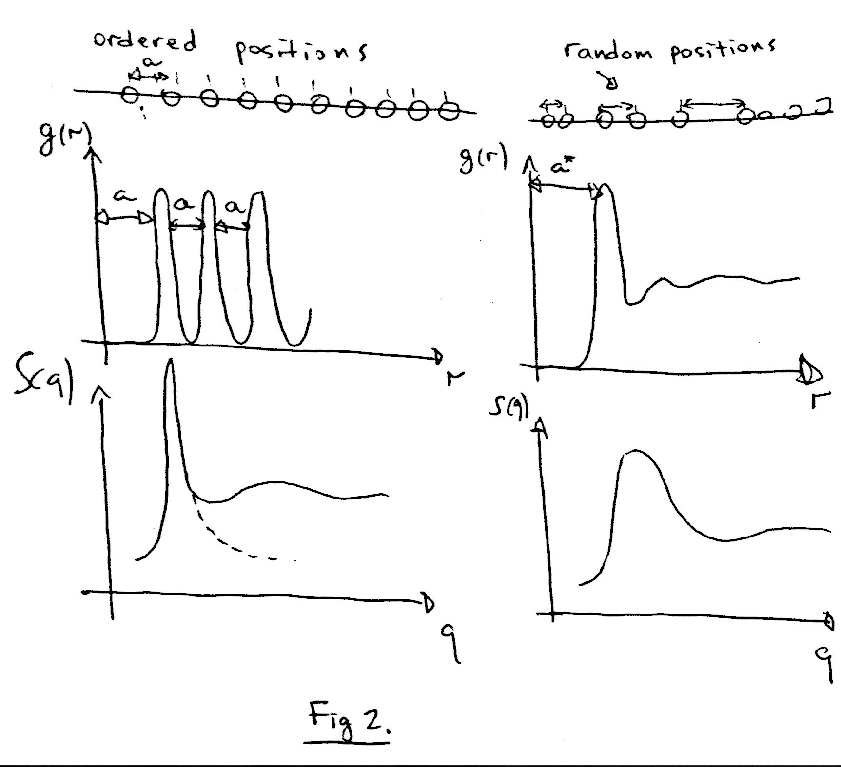
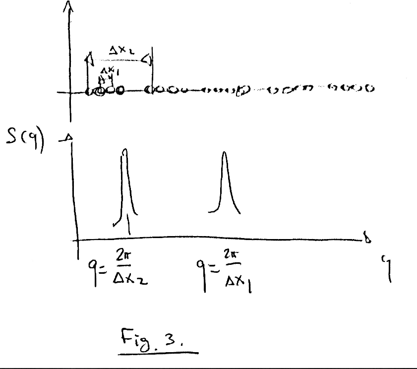
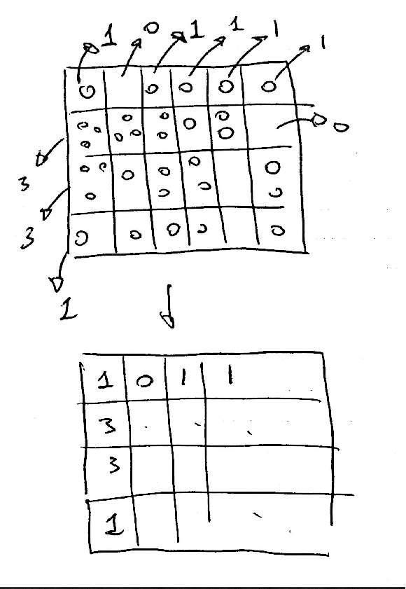

Applications
- Math Theory
- Sq theory
- Implementation
- Verification
Applications of Sq. Molecular dynamics simulations gives us a enormous possibility to analyze behavior on atomic level
but systems too small to compare with experimental results. it would be good to have something to compare with -> static structure factor which can be directly compared with x-ray diffraction kob_et_al , presentation
2.math theory
it is very based on fourier transform $$f(x) = \Sigma (a_n cos(\omega_n x) + b_n sin(\omega_n x)) $$
this a_n and b_n are called Fourier coefficients. There is another version of Fourier series that utilizes complex exponent $$f(x) = \Sigma c_n e^{-i \omega_n x}$$ which is to be discussed in further detail below In many physical applications only absolute value plays important role, because it represents intensity of physical value, and experiments in physical world can measure only intensity, rather than fields. $\mid c_n \mid^2 = \mid a_n \mid^2 + \mid b_n \mid^2$
Lets consider an example :
Fourier series of a simple function $f(x) = cos(x)$ is the function itself. Therefore $ a_1 = 1 $, $a_i = 0$ for every $ i \neq 1 $, $b_i = 0$ for every $i$. So an infinite curve can be represented by a single value.
Talk about Fourier transforms . wikipedia link Note: Infinite curve after fourier transform becomes a single value, whereas a peak becomes and infinite curve. This has very deep and fundamental consequences and is directly related to uncertainty principal
Interested reader might already noticed that the bigger the period is by x, the smaller is the $k$ value - the wave vector .
3.sq theory
Lets look at the Fig. 2. It is obvious that we see a periodic structure on the left side and a random structure on the right side. If we look at the radial distribution function which is to be defined below. But for now it will be just the average number of atoms on the distance $r$ from a given atom, averaged by all atoms. We see a clear periodicity on the plot, which corresponds to the periodicity of the structure.
If we recall our Fourier series whenever we had something periodic in distance space we will have a peak in the reciprocal space.
And that is what we want - an easy way to track positions of atoms.
If we have a structure with two characteristic distances we will be represented by two peaks in the reciprocal space.
Now lets do a rigorous definition: If we have a system of atoms with positions $ \mathbf{r}_{j} $, then
Radial distribution function:
$$g(r) = \frac{V}{N^{2}}\left\langle \sum_{i=1}^{N}\sum_{j\neq i}\delta(\vec{r} - \vec{r}_{ij})\right\rangle \quad\text{with} \vec{r}_{ij}:= \vec{r}_{j} - \vec{r}_{i} $$
, the static structure factor by definition is:
$$ S(\mathbf{q}) = \frac{1}{N} \left | \sum_{j=1}^{N} \mathrm{e}^{-i \mathbf{q} \mathbf{r}_{j}} \right | ^2$$
Which is an absolute value of fourier coefficient squared. It can equally expressed the following way: $$ S(\mathbf{q}) = 1 + \frac{1}{N} \left \langle \int_V \mathrm{d} \mathbf{r} \, \mathrm{e}^{-i \mathbf{q} \mathbf{r}} \sum_{i \neq j} \delta \left [ \mathbf{r} - (\mathbf{r}_i - \mathbf{r}_j) \right ] \right \rangle $$
Which is the definition we will work with.
- Implementation:
Now several points need to be clarified: how to evaluate integral how to deal with delta function
Evaluating integral with exponent would be performing a Fourier transform, therefore we can use tools available for that : FFT - fast fourier transform. Delta function will be considered by binning and histgramming our atomic positions $\mathbf{r}_{j}$ Which will be demonstrated on 2D example for convenience.
import numpy as np
from MDAnalysis import \*
from read_parameters import read_traj_vmd
import os
import save_plots
from numpy.fft import fftn, fftshift
import scipy
from scipy.integrate import quad
import matplotlib
matplotlib.use('Agg')
import matplotlib.pyplot as plt
u = Universe(psffile+'.psf', args.traj)
Ndiv = 201
# create arrays of positions, get the box dimenstions
X = u.atoms.positions
box = u.trajectory.ts.dimensions[:-3]
length_x = box[-1] # be careful here
x = np.linspace(-length_x, length_x, Ndiv+1, endpoint=True)
# binning and histogramming
f, edges = np.histogramdd(X, bins=(Ndiv, Ndiv, Ndiv))
delta = x[1]-x[0]
FFT
ftk = (fftshift(fftn(fftshift(f))\*delta))
sk = np.abs(ftk\*\*2) / float(Natoms)
# basis in reciporal space
omega = 2\*np.pi\*np.arange(Ndiv-1) / (length_x)
omega -= omega[int(Ndiv/2)-1]
normalizing (radial symmetry averaging)
C = norm_sq(sk, k1, k2, k3, Ndiv, kmax)
def norm_sq(sk, k1, k2, k3, Ndiv, kmax):
"""
calculates normk = norm of each vector in grid=|k1,k2,k3|
bins in, calculating average sq of each bin
output: C[Nbins,3] = binindex, kval = normk, sq
"""
# Nbins = int(Ndiv\*1)
normk = np.sqrt(k1\*k1 + k2\*k2 + k3\*k3)
# array to histogram - dk,kmax,Nbins
Nbins = int(1.5\*Ndiv)
dk = kmax/float(Nbins)
C = np.ones((Nbins+1, 3))
for i in range(Ndiv-1):
for j in range(Ndiv-1):
for k in range(Ndiv-1):
kval = normk[i, j, k]
bindex = int(kval/dk)
C[bindex, 0] += 1
C[bindex, 1] += kval
C[bindex, 2] += sk[i, j, k]
C[:,2] /= C[:,0]
C[:,1] /= C[:,0]
# plt.plot(C[:,1], C[:,2])
# plt.show()
# print C[:,1]
# print C[:,2]
# plt.savefig('lala.pdf')
return C
Special thanks for Amanda Parker.
Go Top